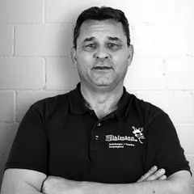
seit 1992Daniel ZihlmannGeschäftsführer
seit 2019Sven ZihlmannLeitung Bauspenglerei, Blitzschutz
seit 2011Daniel RiedwegLeitung Bedachungen, Fassaden
seit 2009Marco SchweglerLeitung Flachdach
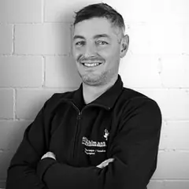
seit 2020Peter BachmannZimmermann, Dachdecker, Fassadenbauer
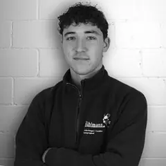
seit 2026Noël BossertDachdecker, Fassadenbauer
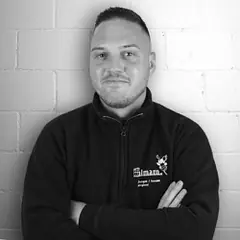
seit 2026Alain DahindenDachdecker, Fassadenbauer
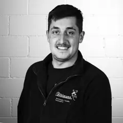
seit 2014Nicola Di VerdeDachdecker, Abdichter
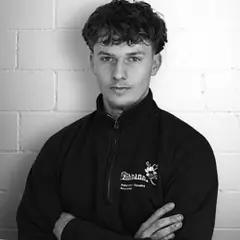
seit 2025Jakob EstermannDachdecker, Fassadenbauer
seit 2025Ali HanyAbdichter
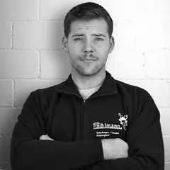
seit 2025Janis ImbachWerkstattleitung, AVOR
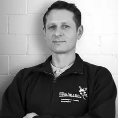
seit 2022Adam JanuszAbdichter
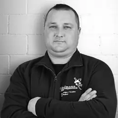
seit 2022Grzegorz KoziolAbdichter
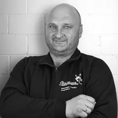
seit 2022Miroslaw KoziolAbdichter
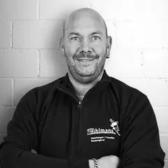
seit 2021Stefan MüllerDachdecker, Fassadenbauer
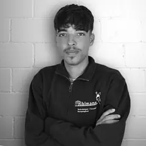
seit 2026Janis MörgeliDachdecker in Ausbildung
seit 2023Benjamin RiechsteinerDachdecker, Fassadenbauer
seit 2022Karin RiedwegAdministration und Buchhaltung
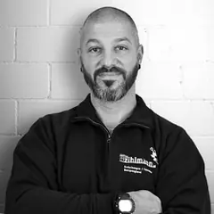
seit 2024Marc RohrDachdecker, Abdichter
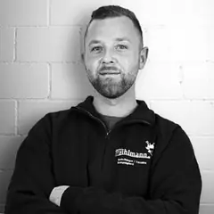
seit 2019Nick SchmutzerAbdichter
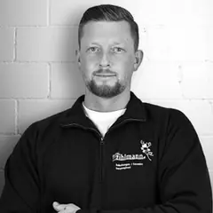
seit 2023Ramon SchmutzerAbdichter
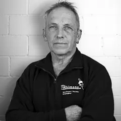
seit 1986Peter SidlerZimmermann, Dachdecker, Fassadenbauer
seit 2026Janosch StierliBauspengler
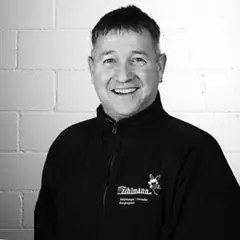
seit 1994Markus StöckliBauspengler
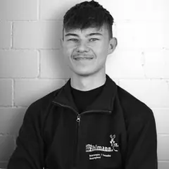
seit 2024Andrin TheilerBauspengler in Ausbildung
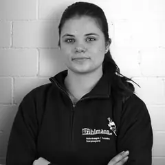
seit 2024Alina VogelBauspenglerin in Ausbildung
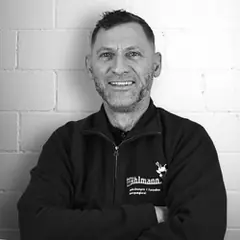
seit 2013Stefan WalzerDachdecker, Abdichter, Unterhalt
seit 2024Doris ZihlmannAdministration und Buchhaltung
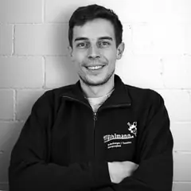
seit 2019Jonas ZihlmannBauspengler
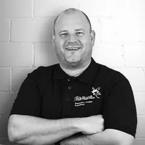
BB Bauvision AGUeli ZihlmannMarketing, Energieingenieur, GEAK®-Experte